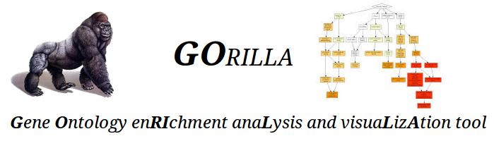
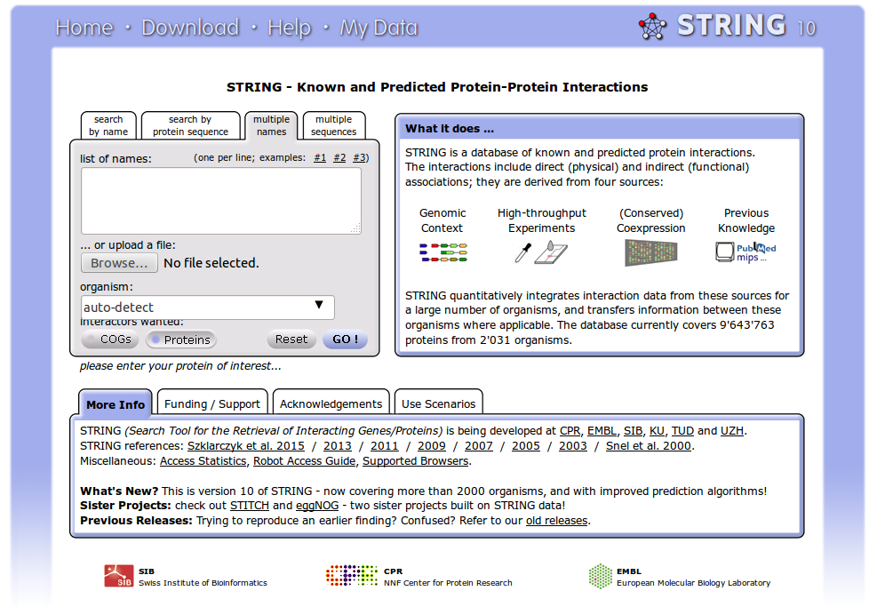

Having identified and quantified gene or protein expression across biological samples, what do these results mean in terms of the underlying biology? See refs on zotero here
Questions that can be addressed include:
To address these questions, we can use several different online tools. The analysis of sets of proteins identified by proteomics experiments is very similar in concept to analysis of sets of perturbed genes in gene-expression experiments, or indeed the output of other 'omics techniques. The tools we use therefore are general purpose 'omics data analysis tools.
There are many tools that calculate the significance of annotation trends - essentially the probability of observing the given number of genes belonging to a given class (function, pathway, process etc). In this tutorial, we make use of the Gene Ontology, and a convenient graphical tool for displaying those Gene Ontology categories that are significantly over- or under-represented in the proteomics (or transcriptomics) data. To find significant functions or pathways in our query data, we compare the query of genes to a 'background' set, typically the complete set of genes from the organism. Download complete lists of human and mouse gene symbols.
|  |
|
|  |
|